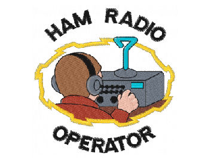

D.B.A.R.F.
Distributed Bay Area Radio Fellowship
The Distributed Bay Area Radio Fellowship is a network of Allstar nodes maintained by a group of friends living in the San Francisco Bay Area and beyond.
Network Status
Members
| Name | Callsign | Node |
|---|---|---|
| Brandon | KN6DPX | None |
| Chris | KN6JFJ | 51987 |
| Drew | KN6DQH | 52111 |
| Ivana | KN6JTG | None |
| Jenn | KN6JJG | 52111 |
| Joey | KN6BDW | 51879 |
| John | KN6DPT | 51865 |
| Katie | KN6JVB | 51879 |